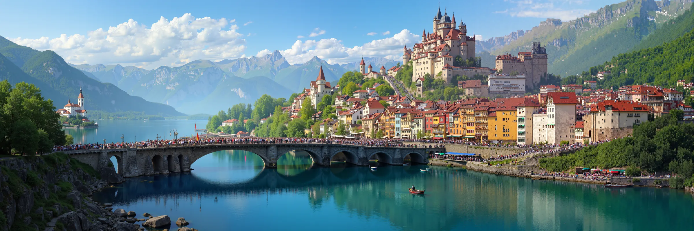
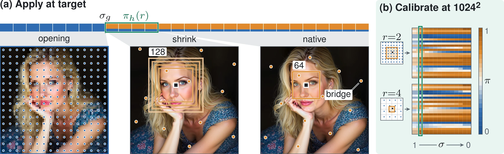
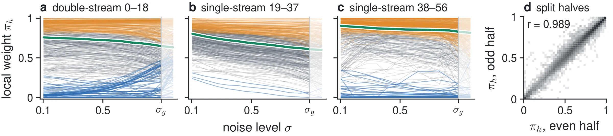

Scale-Covariant Attention
Training-free high-resolution sampling for diffusion transformers, calibrated once at 1024².

2048 × 6144FLUX.1-dev is trained near one megapixel. SCA lets it sample at 4096² by giving every attention head its own mix of a native-size window and a coarse view of the whole image. The mixing weights, one per head and noise level, are fitted once at 1024². At 4096² SCA takes 71.1 s per image, 2.85× less than AReA, and is significantly better than AReA on 11 of 15 metrics and worse on none.
Abstract
Diffusion transformers trained near one megapixel fail at higher resolutions: attention meets unseen token counts and position offsets, and its cost grows quadratically. Each head's balance between local detail and global layout, we find, is measurable at the training resolution and transfers to larger images. We introduce Scale-Covariant Attention (SCA), which calibrates once, fitting one weight per head and noise level in closed form against the model's full attention, and reuses that table at the target. Each head mixes a native-size sliding window with block-centre global attention, both in the trained position range, after a short global-only opening that sets the layout. For FLUX.1-dev at 4096², SCA beats every shared-sampler baseline on all per-image metrics, has the best FID and fine detail of eight methods, and runs 2.85× faster than AReA. Dropped into HRDiT's progressive schedule, it matches HRDiT's preference scores in less than half the time. Gains hold at 6144², on HRGen-1K, with two more seeds, and on FLUX.2-dev; on FLUX.1-Krea-dev, SCA wins six metrics but trails AReA on ImageReward and patch FID.
Method
Every attention head in FLUX.1 blends detail from nearby tokens with layout from the whole image. SCA keeps that blend but builds each part from keys the head already knows from training: a native-size window for detail and a native-size grid over the whole image for layout. Image offsets stay within the trained range, and each query sees as many keys as at 1024².

1Two views per head
The local view is an exact 64 × 64-token sliding window with the original positions. The global view attends to the centre token of every block on a 64 × 64 grid, with coordinates rescaled to that grid. Every image offset stays in the trained range, and the cost grows linearly with the number of tokens.
2Weights fitted at 1024²
To imitate an image s times larger, we shrink the window and subsample the global view by s at 1024², where full attention still works and serves as the reference. The best weight per head and noise level has a closed form. One pass over 32 prompts fills the table for all 1368 heads; tables from disjoint prompt halves correlate at 0.989.
3Global-only opening
Windows that act while the image is still mostly noise can each draw their own copy of the subject. SCA therefore uses the global view alone for the first 8 of 28 steps, while the layout forms, and switches to the per-head mix for the last 20.
What the heads want

The method in motion
How SCA works, in about 75 seconds. Silent, with captions drawn in the video (subtitle files: SRT, WebVTT). The weight table in the video is the real calibrated table.
Method video file missingRender it with web/build/render_method_video.py.
Side by side at 4096²
Every method gets the same prompt and the same seed. Drag the divider on either image; both move together. The square on the right is the 512 × 512 window marked by the white box, at native resolution. Eight prompts come from the paper's curated figures; three are random draws and are marked.
How sampling unfolds
Each video follows one 4096² sample through all 28 steps: the decoded estimate of the clean image at that step, which phase is active (global view only, or the per-head mix), the weights of all 1368 heads at that step, and a crop at native pixels. A second view plays SCA and AReA side by side.
Results
FLUX.1-dev on all 195 Aesthetic-4K prompts at 4096², one seed. Single-pass methods share one sampler: 28 steps, guidance 4.5. Intervals are paired bootstrap 95% intervals over prompts.
| Method | Steps | Time (s) ↓ | Image Reward ↑ | HPSv2.1 ↑ | Pick Score ↑ | CLIP ↑ | MUSIQc ↑ | FID ↓ | Patch FID ↓ | |
|---|---|---|---|---|---|---|---|---|---|---|
| clean | camp. | |||||||||
| Single pass, shared sampler (28 steps, guidance 4.5) | ||||||||||
| Full attention | 28 | 186.5 | 196.2 | −2.18 | 7.60 | 17.94 | 15.37 | 33.1 | 312.4 | 252.2 |
| DyPE | 28 | n/m | 195.9 | −0.10 | 20.55 | 20.51 | 24.92 | 50.3 | 205.5 | 171.9 |
| SEGA | 28 | n/m | 190.4 | 0.56 | 24.34 | 21.64 | 26.95 | 50.3 | 164.9 | 125.8 |
| AReA | 28 | 202.4 | 264.4 | 0.92 | 27.16 | 22.36 | 27.69 | 50.4 | 145.8 | 102.9 |
| SCA (ours) | 28 | 71.1 | 71.5 | 1.23 | 29.67 | 23.09 | 29.14 | 61.2 | 138.1 | 99.1 |
| Multi-stage, own recipe and budget | ||||||||||
| UltraImage | 30+30 | n/m | 308.5 | 1.28 | 30.77 | 23.33 | 28.84 | 41.7 | 142.0 | 109.5 |
| HRDiT | 30+17+10 | 108.6 | 110.4 | 1.34 | 30.92 | 23.46 | 29.12 | 53.5 | 138.4 | 103.0 |
Main comparison at 4096² (paper Table 1). Seconds per image on one GH200: clean is the batch-1 median on an idle GPU, campaign the mean over the full run on shared nodes; n/m: not measured. HPSv2.1 ×100; MUSIQc is MUSIQ on 1024² crops; patch FID is our own definition and is not comparable across papers. Bold: best; underline: second best. The two multi-stage recipes use their own step counts and guidance.
SCA minus AReA, per metric
Seconds per image
Beyond the main setting
- Larger squares. At 6144², SCA beats AReA on 14 of 15 metrics and takes 161.6 s per image.
- Panoramas. At 2048 × 6144, SCA beats AReA on 9 of 15 metrics at 55.8 s against 150.5 s, but loses on aesthetic score and patch FID.
- 2048 × 4096 is mixed. The window already covers half the image height, so the per-head mix adds little over AReA's windows. SCA is better on 3 of 15 metrics and worse on 4 (aesthetic score, CLIP-IQA, patch FID, patch KID), at 38.1 s against 112.4 s.
- HRGen-1K. On all 1000 prompts, SCA beats AReA on all ten per-image metrics; ImageReward +0.818 [0.768, 0.870].
- Two more seeds. With seed labels 1 and 2 on all 195 prompts, the gains over AReA hold.
- FLUX.2-dev. Calibrated on its own, SCA beats full attention on 9 of 10 per-image metrics in about half the time; ImageReward rises from 0.75 to 1.20 (50 prompts).
- FLUX.1-Krea-dev is a split result. SCA wins 6 of 10 per-image metrics at 3.3× AReA's speed, but trails on ImageReward (−0.052 [−0.105, 0.000]) and patch FID.
- Inside a progressive schedule. With HRDiT's three-stage schedule and SCA attention, preference scores match HRDiT's at 49.5 s against 110.4 s per image. Matching here means no resolved difference, not proven equivalence.
From 2048² to 8192²
One prompt and seed at five sizes, taken from the timing runs; the prompt was fixed for timing, not picked for looks. Under each image is a 384 × 384 crop at native pixels, and the time is seconds per image on one GH200. Each size starts from its own noise, so the composition changes with size. The 8192² setting is exploratory: blur and block artifacts remain.
Other shapes and checkpoints
Curated samples. The FLUX.2-dev and FLUX.1-Krea-dev tables were each calibrated on 16 prompts at 1024².
Against a commercial model
This section sets SCA on FLUX.1-dev, run on one GPU without training, beside Ideogram 4.0, a commercial generator, on six of the same prompts. Each pair uses the same prompt text and shows crops of 512 × 512 native pixels from each image, centred on the same point of the scene. Ideogram 4.0 generates up to about 4 megapixels (2048 × 2048 for a square) and reaches 4096² only through a separate upscaler; SCA samples 4096² (16.8 megapixels) directly. The six prompts come from our curated set, which favours SCA; the Ideogram images are first results, not picked.
The Ideogram images have not been added yet, so the right-hand panels are labelled placeholders. Ideogram's own published samples carry no permission to reuse them, so this page shows only images generated for it (instructions in web/README.md).
Where it fails
5 of 11
uncurated FLUX.1-dev 4096² samples in the paper's random galleries gain extra people or repeated objects: three add people and two repeat objects. The paper attributes them to the last 20 steps, when most heads lean on the local window. AReA's images of the same prompts blur or show lattice patterns instead. All four examples below are random draws; the crops are at native pixels.
Without the global-only opening
A development prompt asking for one Moai statue. Mixing from step 1 draws several statues, and 16-token windows draw more, smaller copies. SCA keeps one large statue, though a small second one stands far off.
Local errors
Curated failures at native pixels, SCA left and AReA right in the same window. AReA shows none of these four errors.
Other limits
- Multi-stage recipes keep higher learned preference scores than single-pass SCA: HRDiT at 1.5× its time and UltraImage at over 4×.
- At 8192², grid and stripe artifacts remain in both SCA and AReA; the 12 prompts there are exploratory.
- On FLUX.2-dev, better average metrics coexist with distorted faces in a randomly drawn portrait.
- An underwater-surfer development prompt keeps doubled limbs in every variant.
- No-reference metrics reward sharp repeated subjects, and FID at 299² sees little of the 4K detail, so the paper reports every metric with paired intervals.
Citation
@article{sca2026,
title = {Scale-Covariant Attention for Training-Free
High-Resolution Diffusion Transformers},
author = {Anonymous},
journal = {Under review},
year = {2026}
}